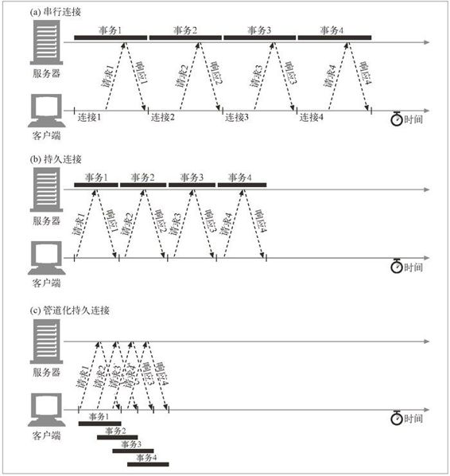

4.6 管道化连接
HTTP/1.1 允许在持久连接上可选地使用请求管道。这是相对于 keep-alive 连接的又一性能优化。在响应到达之前，可以将多条请求放入队列。当第一条请求通过网络流向地球另一端的服务器时，第二条和第三条请求也可以开始发送了。在高时延网络条件下，这样做可以降低网络的环回时间，提高性能。
图 4-18a-c 显示了持久连接是怎样消除 TCP 连接时延，以及管道化请求（参见图 4-18c）是如何消除传输时延的。
对管道化连接有几条限制。
如果 HTTP 客户端无法确认连接是持久的，就不应该使用管道。
必须按照与请求相同的顺序回送 HTTP 响应。HTTP 报文中没有序列号标签，因此如果收到的响应失序了，就没办法将其与请求匹配起来了。
HTTP 客户端必须做好连接会在任意时刻关闭的准备，还要准备好重发所有未完成的管道化请求。如果客户端打开了一条持久连接，并立即发出了 10 条请求，服务器可能在只处理了，比方说，5 条请求之后关闭连接。剩下的 5 条请求会失败，客户端必须能够应对这些过早关闭连接的情况，重新发出这些请求。
HTTP 客户端不应该用管道化的方式发送会产生副作用的请求（比如 POST）。总之，出错的时候，管道化方式会阻碍客户端了解服务器执行的是一系列管道化请求中的哪一些。由于无法安全地重试 POST 这样的非幂等请求，所以出错时，就存在某些方法永远不会被执行的风险。

图 4-18 4 个事务（管道化连接）